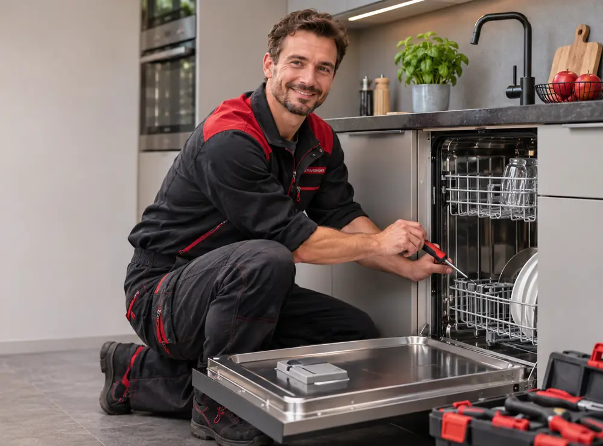

Myčka nevypouští vodu
Voda zůstává na dně po skončení cyklu.
Elektro Specialist s.r.o.
Myčka nedokončuje program, zanechává špinavé nádobí, nevypouští vodu nebo teče?

Poradna · závady
Voda zůstává na dně po skončení cyklu.
Nádobí je po programu mastné, se zbytky jídla či povlakem.
Voda se objevuje u dveří nebo pod spotřebičem.
Program začne, ale voda nenatéká.
Nádobí zůstává studené a mastné nebo program nedoběhne.
Na displeji se objeví kód nebo blikají kontrolky.
Při úniku vody, zápachu spáleniny nebo vybavení jističe myčku nepoužívejte. Je-li to bezpečné, uzavřete přívod vody a odpojte napájení.
Dostupnost opravy konkrétního modelu ověříme předem. Názvy výrobců slouží k identifikaci spotřebičů, nikoli jako tvrzení o autorizaci.
Uveďte E-Nr a případně FD z typového štítku na rámu dveří. Popište stav vody na dně a čas přerušení programu.
Připravte model a PNC z typového štítku. Pro diagnostiku je důležité, zda myčka napouští a zda je slyšet čerpadlo.
Nahlaste servisní číslo ze štítku, pokud je dostupné, a případné blikání kontrolek. Nezaměňujte univerzální tabulky chyb za návod ke konkrétnímu modelu.
Popište zvolený program, účinnost mytí a případnou vodu pod filtrem; uveďte úplné označení modelu.
PrahaStředočeský krajCena opravyPoradna a závadyVšechny spotřebiče
Praha 1–10 a další městské části. Uveďte přesnou městskou část, model a typ instalace. Termín potvrdíme při objednání.
Servis ve Středočeském krajiObjednávka · Praha
Stačí telefon, místo a krátký popis. Můžete přiložit fotografii modelu. Po doručení poptávky vám zavoláme zpět s orientační cenou; skutečná cena se potvrdí po upřesnění závady či diagnostice.
+420 770 644 383
Vratislavova 21/26, Praha 2 – Vyšehrad
IČO: 17707943
Pošlete model, popis závady a obec či městskou část. Ověříme dostupnost a podmínky.
Cenu ovlivňuje diagnostika, díly, práce a případná doprava. Jak se stanovuje cena opravy.
Pomůže s identifikací dílů, ale pro první poptávku stačí značka a popis závady.
Elektro Specialist s.r.o., IČO 17707943, sídlo Vratislavova 21/26, 128 00 Praha 2 – Vyšehrad. Názvy výrobců označují servisované spotřebiče, nikoli autorizaci či zastoupení výrobce. Uvedené oblasti nejsou samostatné provozovny. Dostupnost opravy, způsob předání či výjezdu, cenu a podmínky potvrzujeme individuálně.
Kontakt a ověření společnosti · Jak probíhá servis a nacenění · Reklamace